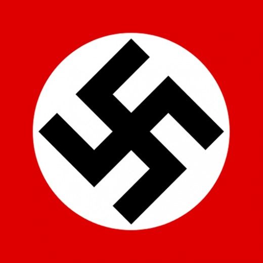

Anti-racism engine documentation
Racist symbols
Racism is a bad thing. However, these symbols can't be fully censored. Usage of these symbols is strict for parody and educational purposes. Promoting racism on SNU will result in account suspension.
Here is a list of racist symbols that SNU is protectve against

The Swastika
Not to be confused with Manji 卐
The Swastika is a rotated Manji, which used to be a symbol of peace that Adolf Hitler (Nazi Leader in World War 2) used to promote his hate speech and beliefs.
This was a horrible part of history, 6 million people who believed in Judaism were killed in a horrific event called The Holocaust.
This symbol can be used ONLY in educational and parody purposes, however these can NEVER promote Nazi Agenda
Promoting nazism on SNU can result in permanent account suspension.

The confederate flag
During the early years of The United States of America, this was a symbol of the confederate army. They were a group of racist people who wanted to keep the bad ways of America during the Civil war, and the symbol is now viewed as a hate symbol
Again, this symbol is allowed but ONLY in Educational and parody purposes. Promoting racism is NOT allowed on SNU and will result in account suspension.